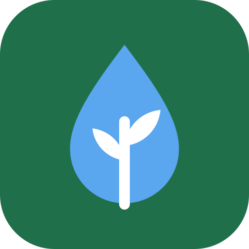

Connect to the hub to see your sensors.
–
Soil moisture %
Settings
Connection
Probe without a hub
–
Calibration
Or type the values:
More
–
Calibration
Now: dry – V,
wet – V, raw – V
Or type the values:
Measuring
Diagnostics
Boot history (newest first):
–
Probe memory: –
More
WiFi / MQTT
WiFi MQTT